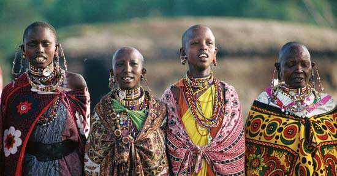
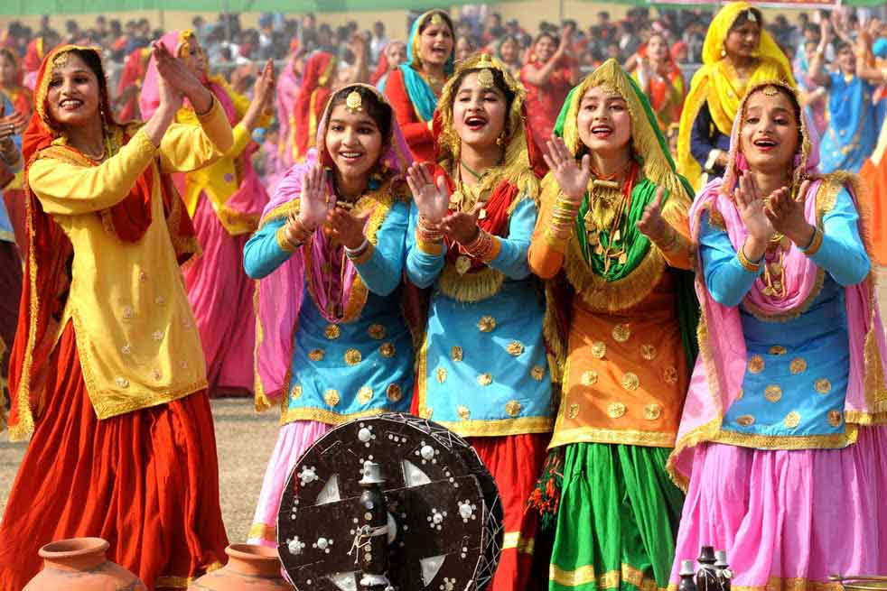
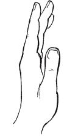
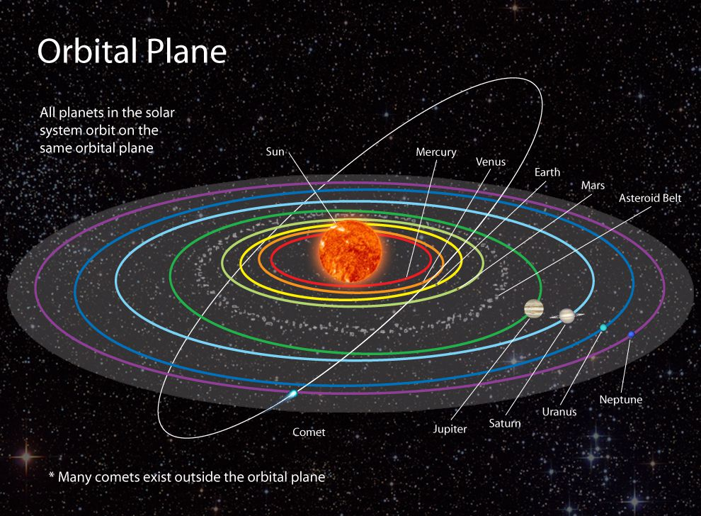

Evolution real? The answer is no, evolution is not real, it does not exist.
We were all created, all created independently, each race independently, in order to create a unique and different World, a World that could not be created with one race. Like ingredients to an ultimate recipe, we, each group or race of people are designed to be part of a master design... a design so grand so unique no one person can grasp. We are all Original Designs
...This includes architecture, music, culinary arts, spirits, dance and movement, how we interact, anything and everything, we could create a unique and different World, it will happen so long as every human being is allowed to live freely. Change will happen organically.
Like this song for instance, with a touch of early 80's R&B, it is strongly influenced by the electronic genre, Kavinsky, Georgio Moroder, Litany and others, it is a beautiful blend, something unique that could not have been created while being influenced by one race or culture.
Are we really Original Designs?
There are distinct differences between all the cultures here on Earth. All is needed is about 10 minutes of time mixed with critical thinking while observing imagery. Observe a few cultures some which are neighboring and ask how did they come to be? Were they created independently or originate from one group? Observe below, was each created independently, or one created with adaption and evolution. The answer independently. Look...
Africa
India
Saudi Arabia
Germany
Russia
China
Brazil
We are all different There is no environmental component, weather pattern or diet that shapes an individual people over time.
Looking at the images above, you can start to think about the cultures, architecture, food and lives of the people. Each are different. Start to combine the cultures and people and you have something unique, something different, something new that the our Grand Architect or God could not create with one.
The Existence of God
It can be proven within the definitive design in nature, and mathematics within the design.
Let's take a look at the aloe plant above. Do you see the uniformity and math within the design? The point of this, we were all created, all life on Earth created, no evolution.
Proof that we were created. Let's do an exercise...
I want you to take a look at your hand. There is an architect at play. Look at your hand from the side, do so while starting to wiggle your fingers and move your hand back and forth. Do this in front of a plant.
It's important that you perform this exercise next to or in front of a plant. Spend at least a 15 seconds performing this exercise, ask the question while performing this, "Does the hand belong? Is the human hand foreign?"
The hand is foreign, the human existence is foreign, we all together everything human is foreign. We did not grow or originate from Earth. We were created by God, by an Architect. To support this case, let's consider the single celled organism theory, that we all originated including animal life from a single celled organism, it is a harsh reality that the the amount of data that would need to reside within the starting single celled organism would be very large. It cannot be stressed enough that life on Earth would be very very strange. Evolution does not exist, we did not originate from a single celled organism. We were created by an Architect.
There is only so much preference data that can stored within DNA...
The Solar System
The solar system consists of 8 planets that orbit the Sun. These planets orbit in a horizontal fashion. While orbiting these planets tilt and rotate... its systematic, uniform in design. An Architect is at play, God.
One last time...
One last time, there are differences in preferences between different races or organizations of people. If two different races were to bare a child, the preferences for that child would be unique... a blend. He or she would have preferences from both cultures and may in turn prefer something new... again a blend. You don't even have to believe in intercultural relationships (I know this is touchy...) in order to believe in our Grand design, again blends can be something as simple as food or drink, something like Cherry Sprite, Ginger Ale with Lemonade or Chicken & Waffles, all can be seen as blends.
You don't have to believe in intercultural relationships, it does however need to be allowed to happen naturally, but not forced.
It has an opportunity of happening...
This is "Thank you!" in Sinhala, language of Sri Lanka. It is probably the most interesting language...
Blacks before women → buy plants
Whites before women → buy plants
173
South Korea
Japan
Mexico
United States
© 2019 VoceBonita